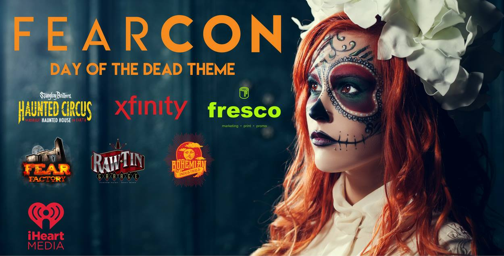

Fearcon

October 28, 2016
Salt Palace Event Center
A unique, one of a kind event that celebrates all things Halloween, Horror, and the Fantastical. We want to make Fear Con your NEW HALLOWEEN TRADITION.
Fear Con will be themed Day or the Dead or Dia de los Muertos. If you do NOT have a cosplay or costume we will have professional make up artists to "sugar skull" you!
Fear Con's focus will be on providing live, interactive entertainment. We want people to feel like there are things to see and do at every turn. We will also encourage all of our vendors to add to the look and feel of the show.
Here are some of the other things to expect at Fear Con.
HAUNTED ESCAPE EXPERIENCES-
We are building 3 unique, high quality vignettes or experiences that will combine movie quality sets, professional actors, and escape room elements. We are aiming to provide a truly unique experience that will thrill all who pass through. These 3 experiences will be part of a 30-45 minute journey that people will experience in groups of 10 or less. You will be interacting with our live actors and other guests to try and solve the mystery of these experiences before it is too late. You must solve the puzzle before time expires. It will be possible to fail. Because of the time consuming, unique nature of this experience we will only be able to accomodate about 1,000 people during the weekend. Due to this and the cost to produce the experience, this will be available to VIP and GOLDs first at no additional cost. We will be contacting our VIPs and GOLDs first to schedule your times. If the experience does not fill up, the Haunted Escape Room experiences will be available to general admission at an additional cost.
MISS FEAR CON-
Calling all COSPLAYERS, SCREAM QUEENS, and PAGEANT GIRLS Miss Fear Con is coming! We are looking to coronate our first Gothic Court. Miss Fear Con will be heavily promoted over the next year as an official ambassador of Fear Con. Winner will receive a prize package, recognition, paid promotion, and receive a coronation that will be...wait for it...to DIE FOR. :) Our coronation ceremony, custom crown, and sash, will be custom created for Fear Con. Judging will be a combination of fan and audience vote as well as a preselected panel. Criteria will be...
1. Cosplay/Costume Presentation- Participants will be scored on their overall presentation of cosplay or costume. Whether you have a great cosplay, gothic beauty, or are just plain terrifying, we want you! Criteria will be loose, but will reward quality, creativity, and presence.
2. We will have a brief, live, on stage interview on Friday. Participants will be asked some light, fun Halloween related questions.
3. Fear Factor/Gross out competiton. Participants will need to show they have the true heart of Halloween by participating in some surprise fear inducing challenges live on stage. (These will be mild and will not be physically demanding.)
***Participants will pay an admission fee that will include a multi-day admission to the show, and professional edited photos from Miss Fear Con hosted photo shoots.
Click Here to participate in Miss Fear Con http://bit.ly/2asEEJK ****
CARNIVAL GAMES-
Each guest will be given official Fear Con tokens that can be redeemed to play our boardwalk games. Guests of all ages will be able to participate and try to win additional tokens that can be redeemed at our main merchandise booth for prizes, apparel, and other rewards. This will be fun for guests of all ages with games scaled for adults and children.